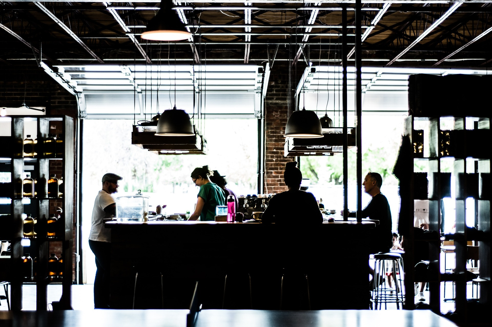

Popina é um restaurante italiano de alto padrão. Seus pratos são os mais elaborados do estado de São Paulo, ganhando assim diversos prêmios, como recentemente, 2 estrelas michelin. Popina é mais do que apenas um restaurante, Popina é uma experiência, Popina é único, Popina é viver, Popina é sentir.
Todo ambiente do Popina foi planejado e equipado para oferecer uma das melhores experiências gastronômicas do Brasil. O espaço do Popina possui mesas em locais fechados e abertos, para a preferencia do cliente. A comida é feita com a presença dos melhores profissionais existentes e é usado apenas temperos de alto padrão e qualidade.
Popina, mesmo sendo um restaurante novo, já acumulamos muito destaque no mundo gastronômico. Nosso restaurante já é o mais visitado entre os criticos e o mais bem avaliado entre eles.
Há muitos anos, nas movimentadas ruas de São Paulo, nasceu a ideia de um restaurante que transcendesse as fronteiras da culinária italiana, elevando-a a um patamar único de excelência. Esse sonho tomou forma nas mãos habilidosas do renomado chef italiano, Marco Ricci. Marco cresceu em uma pequena cidade no norte da Itália, onde as tradições culinárias eram sagradas e passadas de geração em geração.
Ao se estabelecer em São Paulo, Marco trouxe consigo não apenas suas receitas familiares, mas também o desejo de criar uma experiência gastronômica inigualável. Ele escolheu o bairro cosmopolita de Jardins para dar vida ao seu sonho, e assim nasceu o Popina, um oásis culinário em meio à agitação urbana.
O nome "Popina" foi inspirado nas antigas tavernas romanas, onde as pessoas se reuniam para compartilhar histórias, risadas e, é claro, boa comida. Marco queria que seu restaurante fosse mais do que um local para simples refeições; ele buscava criar uma experiência que envolvesse todos os sentidos.
Desde o início, Marco se dedicou a utilizar ingredientes frescos e autênticos, muitos dos quais eram importados diretamente da Itália. Sua habilidade em combinar tradição e inovação fez com que os pratos do Popina se destacassem não apenas em São Paulo, mas em todo o Brasil.
À medida que o Popina ganhava reconhecimento, Marco investia na formação de uma equipe de chefs talentosos e apaixonados, compartilhando sua visão e conhecimento. O ambiente no restaurante tornou-se uma mistura de elegância e calor humano, onde cada cliente se sentia parte de algo especial.
A notícia da conquista de duas estrelas Michelin foi um marco na jornada do Popina. Marco e sua equipe celebraram não apenas pela honra de receber tal reconhecimento, mas também pela validação de sua dedicação em proporcionar uma experiência única aos clientes.
O Popina não era apenas um restaurante; era um local onde as pessoas vinham para celebrar momentos importantes, criar memórias inesquecíveis e experimentar a verdadeira paixão pela gastronomia italiana. Marco Ricci conseguiu transformar seu sonho em realidade, e o Popina se tornou um ícone na cena gastronômica de São Paulo, uma celebração da rica tradição italiana em um contexto contemporâneo. O lema do Popina ecoava em cada prato servido: Popina é viver, Popina é sentir.